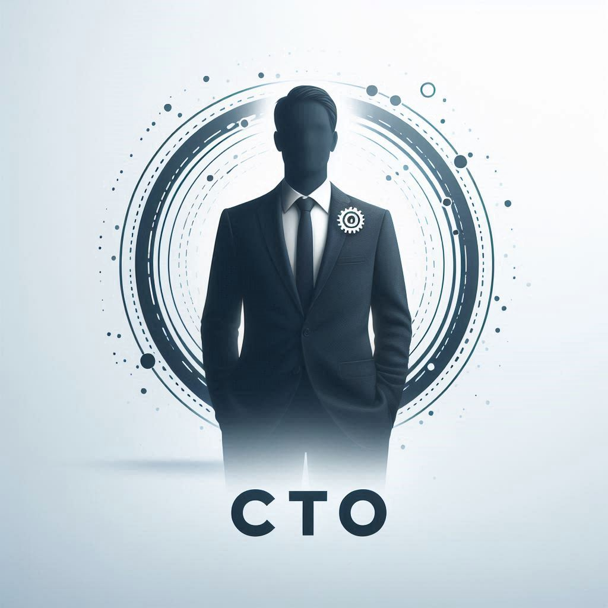
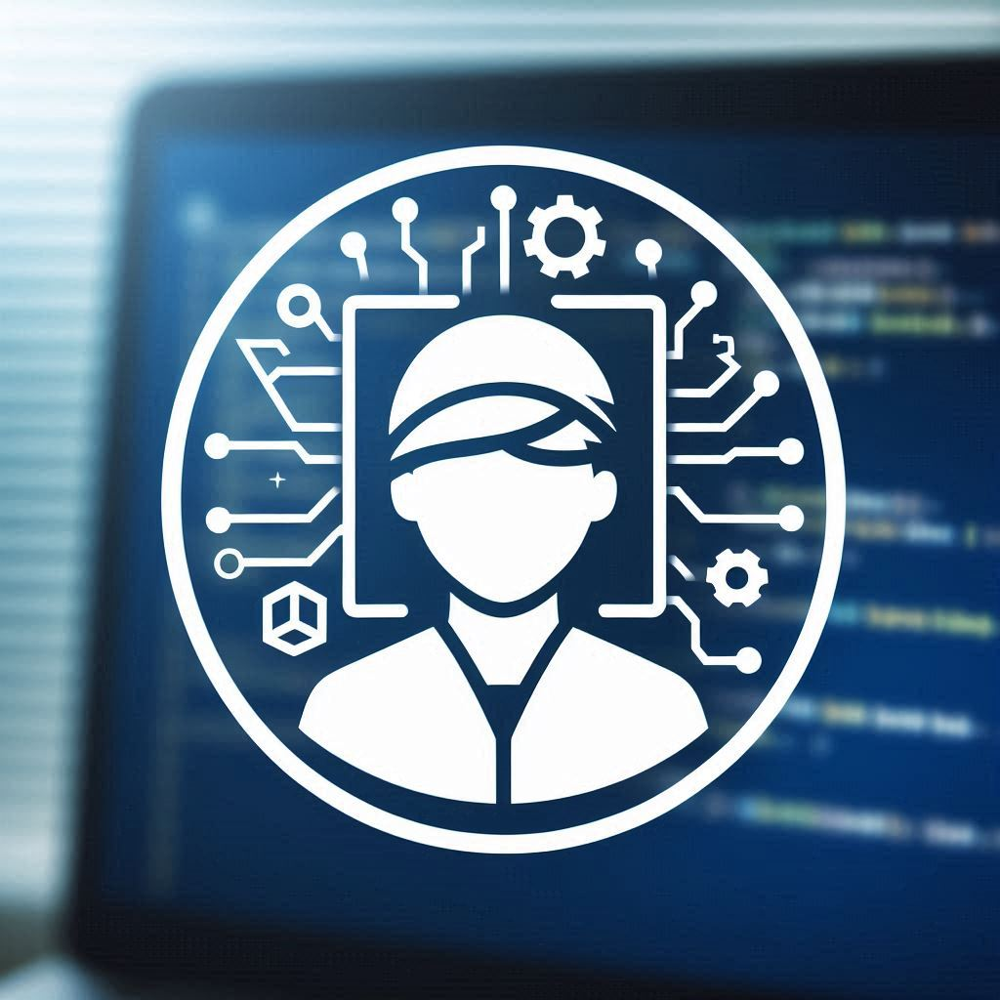

Це стартап — початок великого шляху! Наразі обмежені фінансові ресурси, але тут повно ентузіазму та ідей. Шукаю ентузіастів, готових вкласти свій час і енергію в цю справу!
Пошук Команди
Як розумієте, необхідна команда, така команда, щоб змогти досягти всього.
Реалізувати et Nota можна навіть за найледачіших зусиль, але
з достатньою боєкомплектністю
менше, ніж за 1 рік, а то й за 1-2 квартали. А прибутки, незважаючи на їх
заниження в документах, будуть колосальними, що очевидно, якщо говорити про
технологічні проєкти.
Життя — це робота, навіть стартап — робота (якщо ти раптом
подумав протилежне)... І це унікальна робота, яка не кожному дана, але кожному окупається, хто в ній
бере участь. Але це безсумнівна adventure, хоч і небезпечна, яка
принесе незабутні спогади.
Раджу для початку вивчити Продовження... (et Nota).
Якщо ти зрозумів суть проєкту і/або дуже сильно зацікавлений у ньому і ЗНАЄШ (що завгодно) і МОЖЕШ (чим завгодно) допомогти в його реалізації, то ти підходиш.
А якщо на додачу до цього ще й поділяєш погляди et Human — ідеально підходиш!
Деякі моменти для уточнення:
Кожна названа роль не є фіксованою і буде уточнюватися.
Жодна неназвана роль не є навмисне опущеною та/або непотрібною.
Якщо ти можеш принести (приносиш) користь стартапу, але не займаєш жодної з названих ролей, то це означає, що твоя роль не була названа.
Ролі можуть перетинатися в одній людині.
Кожною роллю може займатися і більше, ніж одна людина.
CTO

Опис:
Ти візіонер і техноентузіаст, готовий створити щось неймовірне з нуля?
Ти хочеш працювати у стартап-середовищі, де інновації поєднуються з можливостями?
Приєднуйся до нас у ролі Chief Technology Officer (CTO) та стань рушійною силою нашого амбітного шляху!
Як CTO, ти будеш:
Вести розробку: Керувати створенням нашого мінімально життєздатного продукту (MVP), перетворюючи ідеї на функціональний і зручний мобільний додаток.
Технічне бачення: Визначати функціональні вимоги MVP та розробляти технічну стратегію для їх реалізації.
Технологічний стек: Обирати технологічні платформи та інструменти, на яких базуватиметься наш продукт.
Управління командою: Будувати та керувати нашою технічною командою, залучаючи талановитих розробників.
Будувати і масштабувати: Масштабувати продукт після запуску MVP, покращувати функціональність і забезпечувати надійну архітектуру для майбутнього зростання.
Надихати та інноваційно мислити: Вносити інноваційні ідеї, мотивувати команду і просувати технологічні рішення вперед.
Співпрацювати і наставляти: Тісно співпрацювати із засновниками та іншими членами команди, створювати культуру співробітництва та наставляти молодших розробників.
Хто ти:
Технічний експерт: Глибоке розуміння розробки мобільних додатків, досвід роботи з різними технологіями та фреймворками.
Інноваційний мислитель: Пристрасть до технологій, здатність перетворювати креативні ідеї в реальність.
Розв'язувач проблем: Вміння виявляти проблеми та пропонувати ефективні технічні рішення.
Командний гравець: Готовність до співпраці, відмінні комунікативні навички та здатність мотивувати команду.
Бажані навички та досвід:
Технічна компетентність: Досвід у розробці мобільних додатків (iOS/Android), знання кросплатформених рішень вітається.
Досвід у керівництві: Бажання та досвід у управлінні технічними командами.
Стратегічне мислення: Здатність адаптувати технічні стратегії під бізнес-цілі та забезпечувати їх успішну реалізацію.
Штучний інтелект: Успішний досвід впровадження ІІ-технологій у мобільні додатки, включаючи машинне та глибоке навчання.
Великі дані (Big Data): Професійні навички роботи з великими даними, їх аналізом та обробкою. Досвід використання платформ для зберігання та аналізу великих даних.
Безпека: Глибоке розуміння та практичний досвід забезпечення безпеки в мобільних додатках, включаючи захист даних користувачів та дотримання конфіденційності.
Чому варто приєднатися:
Вплив на результат: Твоя робота матиме прямий вплив на успіх продукту та розвиток компанії.
Інноваційне середовище: Можливість працювати в культурі, де цінуються креативність, співпраця та постійне навчання.
Можливість стати співвласником: Як ранній учасник команди, ти отримаєш можливість заробити частку в компанії та поділитися її успіхом.
Гнучкість та автономія: Можливість експериментувати, впроваджувати інновації та впливати на технологічне майбутнє компанії.
Розробник

Опис:
Ти завзятий програміст, який хоче зробити свій внесок у створення інноваційного продукту? Шукаєш динамічне середовище стартапу, де твої ідеї та навички будуть затребувані? Приєднуйся до команди в ролі розробника і допоможи втілити в життя амбітні плани!
Як розробник, ти будеш:
Розробляти та впроваджувати: Створювати код для нашого мобільного додатка, забезпечуючи його функціональність і надійність.
Фронтенд і бекенд: Працювати як з клієнтською, так і з серверною частиною додатка, забезпечуючи їх гармонійну взаємодію.
Оптимізація та тестування: Проводити оптимізацію коду і тестування для забезпечення високої якості продукту.
Інтеграція з API: Реалізовувати інтеграції із зовнішніми сервісами та API для розширення функціоналу додатка.
Співпрацювати з командою: Тісно взаємодіяти з дизайнером і CTO для реалізації дизайну та технічної стратегії.
Навчатися і розвиватися: Постійно вдосконалювати свої навички і вивчати нові технології для підвищення ефективності роботи.
Хто ти:
Технічний експерт: Ти маєш досвід розробки мобільних додатків і володієш сучасними мовами програмування.
Проблемно-орієнтований: Ти вмієш знаходити і усувати проблеми в коді, забезпечуючи його стабільність і продуктивність.
Командний гравець: Ти готовий працювати в команді, ділитися своїми ідеями та прислухатися до думки інших.
Жадаєш навчатися: Ти прагнеш постійно вчитися і розвиватися, освоюючи нові технології та методи розробки.
Бажані навички та досвід:
Досвід розробки мобільних додатків: Практичний досвід розробки додатків для iOS і Android.
Фулстек розробка: Знання як фронтенд, так і бекенд технологій.
Інтеграція з API: Досвід роботи з RESTful API та іншими зовнішніми сервісами.
Інструменти розробки: Знання інструментів і методів, таких як, наприклад, Git, CI/CD, Docker та ін.
Штучний інтелект: Досвід роботи з ІІ-технологіями та їх інтеграцією в мобільні додатки. Знання машинного навчання та глибокого навчання.
Великі дані (Big Data): Навички роботи з великими даними, їх аналізом і обробкою. Досвід роботи з платформами для зберігання та аналізу великих даних.
Безпека: Глибоке розуміння аспектів безпеки в мобільних додатках, включаючи захист даних користувачів та забезпечення конфіденційності.
Чому варто приєднатися:
Вплив на продукт: Твоя робота буде безпосередньо впливати на успіх продукту та задоволеність користувачів.
Інноваційне середовище: Приєднуйся до команди, яка цінує креативність, співпрацю і постійне навчання.
Можливості отримання частки в компанії: Як ранній член команди, ти отримаєш шанс заробити частку і брати участь в успіху компанії.
Гнучкість і автономія: Насолоджуйся свободою експериментувати, впроваджувати свої ідеї і впливати на майбутнє наших технологій.
Маркетолог (CMO)
Опис:
Ти захоплений маркетолог, готовий допомогти стартапу досягти своїх амбіційних цілей? Шукаєш можливість працювати в динамічному середовищі, де твої ідеї можуть мати безпосередній вплив? Приєднуйся до команди в ролі маркетолога і допоможи просунути продукт на ринок!
Як маркетолог, ти будеш:
Розробляти маркетингову стратегію: Створювати і впроваджувати маркетингові плани для просування мобільного додатка.
Аналіз ринку: Досліджувати ринок, конкурентів і цільову аудиторію для виявлення можливостей і загроз.
Створення контенту: Розробляти креативні матеріали та кампанії для залучення та утримання користувачів.
SMM і SEO: Керувати нашими соціальними медіа та оптимізувати контент для покращення видимості в пошукових системах.
Співпрацювати з командою: Працювати в тісному взаємозв'язку з дизайнером і розробниками для узгодження маркетингових зусиль з продуктовою стратегією.
Вимірювати і аналізувати: Використовувати аналітику і метрики для оцінки ефективності маркетингових кампаній і внесення покращень.
Хто ти:
Маркетолог-новатор: Шукаємо творчу людину, яка готова навчатися і застосовувати нові підходи в маркетингу. Досвід вітається, але головне — твоя готовність рости разом з нами і ділитися свіжими ідеями.
Аналітично підкований: Ти вмієш аналізувати дані і приймати обґрунтовані рішення на їх основі.
Комунікатор: Ти вмієш чітко і ефективно передавати свої ідеї та концепції як всередині команди, так і для зовнішньої аудиторії.
Командний гравець: Ти готовий працювати в команді, ділитися своїми ідеями і прислухатися до думки інших.
Бажані навички та досвід:
Управління соціальними медіа: Досвід роботи з платформами соціальних медіа та інструментами аналітики.
SEO і контент-маркетинг: Знання найкращих практик SEO і створення контенту, оптимізованого для пошукових систем.
Аналітичні інструменти: Досвід роботи з інструментами аналітики, такими як, наприклад, Google Analytics, і використання даних для прийняття рішень.
Чому варто приєднатися:
Вплив на продукт: Твої маркетингові зусилля будуть безпосередньо впливати на успіх продукту і його позиціонування на ринку.
Інноваційне середовище: Приєднуйся до команди, яка цінує креативність, співпрацю і постійне навчання.
Можливості отримання частки в компанії: Як ранній член команди, ти отримаєш шанс заробити частку і брати участь в успіху компанії.
Гнучкість і автономія: Насолоджуйся свободою експериментувати, впроваджувати свої ідеї і впливати на майбутнє наших маркетингових стратегій.
Дизайнер
Опис:
Ти талановитий дизайнер, який прагне створювати унікальний і незабутній користувацький досвід? Шукаєш можливість працювати в динамічному стартап-середовищі, де твої ідеї можуть втілитися в життя? Приєднуйся до команди в ролі дизайнера і допоможи створити продукт, який буде вражати користувачів!
Як дизайнер, ти будеш:
Створювати дизайн: Розробляти інтуїтивно зрозумілі та привабливі користувацькі інтерфейси для нашого мобільного додатка.
UI/UX дизайн: Проектувати інтерфейси, що забезпечують зручність і естетику, враховуючи потреби і очікування користувачів.
Прототипування: Створювати інтерактивні прототипи для тестування і демонстрації функціоналу.
Візуальний дизайн: Розробляти візуальні елементи, такі як іконки, ілюстрації і графіку, що відповідають загальному стилю додатка.
Співпрацювати з командою: Працювати в тісному співробітництві з розробниками і CTO для реалізації дизайну в кінцевому продукті.
Досліджувати і покращувати: Проводити дослідження користувачів, збирати зворотний зв'язок і вносити покращення в дизайн на основі даних.
Хто ти:
Креативний професіонал: У тебе є портфоліо, яке демонструє твій досвід і креативність в області дизайну.
Орієнтований на користувача: Ти вмієш думати з точки зору користувача і створювати дизайн, який відповідає їх потребам.
Командний гравець: Ти готовий співпрацювати з іншими членами команди, ділитися своїми ідеями і прислухатися до їхньої думки.
Технічно підкований: Ти знайомий з сучасними інструментами і методами дизайну, такими як Sketch, Figma, Adobe Creative Suite тощо.
Бажані навички та досвід:
Досвід в UI/UX дизайні: Практичний досвід розробки користувацьких інтерфейсів і покращення користувацького досвіду.
Прототипування: Уміння створювати інтерактивні прототипи для тестування і презентації.
Веб і мобільний дизайн: Досвід роботи з дизайном для мобільних додатків і веб-платформ.
Комунікаційні навички: Здатність чітко і ефективно передавати свої ідеї та концепції.
Чому варто приєднатися:
Вплив на продукт: Твій дизайн буде визначати користувацький досвід і візуальну ідентичність продукту.
Інноваційне середовище: Приєднуйся до команди, яка цінує креативність, співпрацю і постійне навчання.
Можливості отримання частки в компанії: Як ранній член команди, ти отримаєш шанс заробити частку і брати участь в успіху компанії.
Гнучкість і автономія: Насолоджуйся свободою експериментувати, впроваджувати свої ідеї і впливати на майбутнє наших технологій.
Фінансист (CFO)
Опис:
Ти досвідчений фінансист, готовий допомогти стартапу ефективно керувати ресурсами та досягати фінансових цілей? Шукаєш можливість працювати в динамічному середовищі, де твої ідеї та навички будуть затребувані? Приєднуйся до нашої команди в ролі CFO та допоможи нам створити стійку фінансову основу для нашого бізнесу!
Як CFO, ти будеш:
Керувати фінансами: Розробляти та впроваджувати фінансову стратегію, керувати бюджетом та фінансовими потоками компанії.
Бюджетування та прогнозування: Створювати бюджети, прогнозувати доходи та витрати, контролювати виконання фінансових планів.
Фінансова звітність: Готувати фінансові звіти, аналізувати фінансові показники та надавати рекомендації щодо покращення.
Залучення інвестицій: Працювати над залученням інвестицій, розробляти інвестиційні пропозиції та презентації.
Співпрацювати з командою: Працювати у тісній взаємодії з іншими керівниками та засновником для узгодження фінансової стратегії із загальною стратегією компанії.
Контролювати ризики: Оцінювати фінансові ризики, розробляти стратегії їх мінімізації та забезпечувати дотримання фінансових регламентів.
Хто ти:
Фінансовий експерт: Ти володієш компетенціями у сфері фінансового управління підприємством (включаючи такі венчурні проекти, як стартап) та маєш глибоке розуміння фінансових механізмів.
Стратегічний мислитель: Ти вмієш розробляти та впроваджувати фінансові стратегії, що сприяють зростанню та розвитку бізнесу.
Аналітично підкований: Ти вмієш аналізувати дані та приймати обґрунтовані рішення на їх основі.
Командний гравець: Ти готовий працювати у команді, ділитися своїми ідеями та прислухатися до думки інших.
Бажані навички та досвід:
Талант у фінансовому управлінні: Видатні здібності та глибокі знання у ролі фінансиста, особливо цінні в ІТ та стартап-секторі, досвід вітається.
Бюджетування та прогнозування: Просунуті навички у складанні бюджетів та фінансових прогнозів, а також у їхньому управлінні.
Фінансова звітність: Глибоке розуміння стандартів та методик фінансової звітності.
Залучення інвестицій: Уміння ефективно взаємодіяти з інвесторами та створювати переконливі інвестиційні пропозиції та презентації.
Чому варто приєднатися:
Вплив на бізнес: Твої фінансові рішення будуть безпосередньо впливати на успіх компанії та її розвиток.
Інноваційне середовище: Приєднуйся до команди, яка цінує креативність, співпрацю та постійне навчання.
Можливості отримання частки в компанії: Як ранній член команди, ти отримаєш шанс заробити частку і брати участь в успіху компанії.
Гнучкість та автономія: Насолоджуйся свободою експериментувати, впроваджувати свої ідеї та впливати на майбутнє нашої фінансової стратегії.
Юрист
Опис:
Ти досвідчений і/або відповідальний юрист, який спеціалізується на питаннях, пов'язаних зі стартапами та технологічними компаніями? Шукаєш можливість впливати на правову стратегію та забезпечувати юридичну підтримку на всіх етапах розвитку бізнесу? Приєднуйся до нашої команди в ролі юриста та допоможи нам створити правову основу для стартапу!
Як юрист, ти будеш:
Юридична підтримка: Надавати консультації з юридичних питань, пов'язаних із діяльністю стартапу.
Складання документації: Готувати та аналізувати юридичні документи, включаючи договори, ліцензії та угоди.
Робота з інтелектуальною власністю: Захищати права інтелектуальної власності компанії, оформлювати патенти та торгові марки.
Ризик-менеджмент: Оцінювати та управляти юридичними ризиками, розробляти стратегії їх мінімізації.
Співпрацювати з командою: Взаємодіяти з іншими членами команди для узгодження бізнес- та юридичних стратегій.
Дотримання законодавства: Забезпечувати відповідність діяльності компанії чинному законодавству та нормативним актам.
Хто ти:
Досвідчений спеціаліст: У тебе є досвід роботи в галузі корпоративного та технологічного права.
Аналітичний склад розуму: Ти здатен аналізувати складні юридичні питання та пропонувати практичні рішення.
Комунікативні навички: Ти вмієш чітко та ясно викладати свої думки і працювати в команді.
Відповідальність: Ти готовий нести відповідальність за юридичні аспекти діяльності компанії.
Бажані навички та досвід:
Спеціалізація в технологічному праві: Знання особливостей юридичного регулювання в IT-сфері.
Досвід роботи зі стартапами: Розуміння специфіки юридичного забезпечення стартап-проєктів.
Досвід в інтелектуальній власності: Знання процедур реєстрації та захисту прав інтелектуальної власності.
Чому варто приєднатися:
Важливість ролі: Твоя робота матиме важливе значення для захисту інтересів компанії та забезпечення її юридичної стійкості.
Розвиток професійних навичок: Бери участь у розвитку високотехнологічного середовища, де кожен день приносить нові юридичні виклики.
Можливості для кар'єрного зростання: Як частина молодої та амбіційної команди, ти зможеш активно впливати на майбутнє компанії та свою кар'єру.
Гнучкість та автономія: Насолоджуйся свободою впроваджувати свої ідеї, розробляти юридичні стратегії та впливати на розвиток бізнесу.